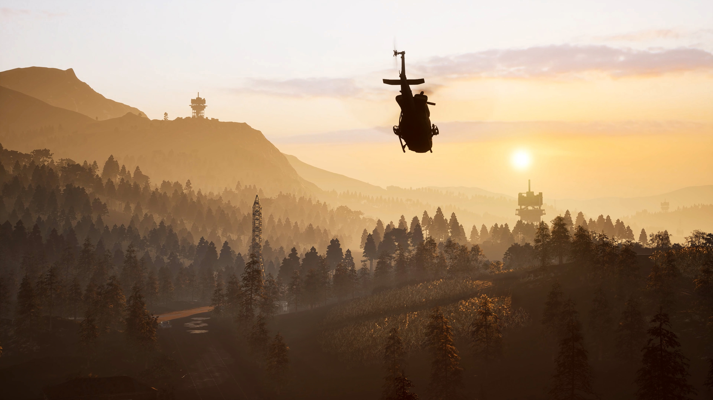
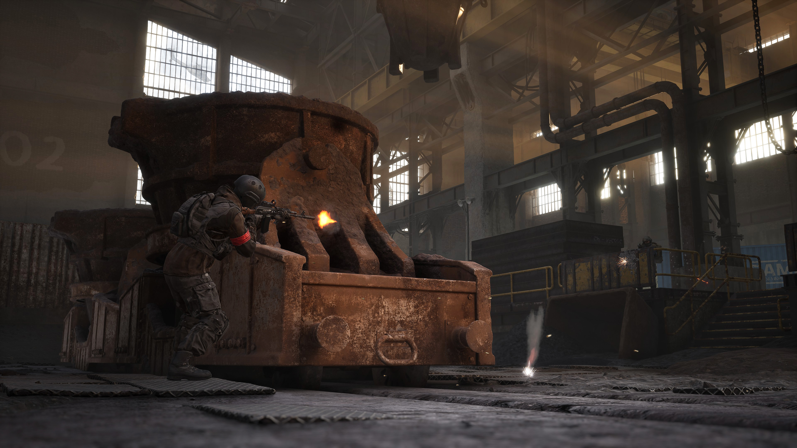
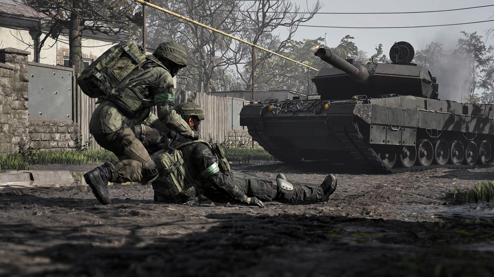
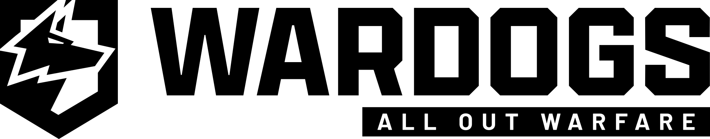

Wardogs artwork identifies the game. The Valkyria crest remains the clan identity. These images are not evidence of clan members, matches or results.
Editorial imagery

Key art
News announcements and game introductions. Keep the complete artwork and baked-in wordmark visible.
key-art-1080p.png Open key-art original
Flying
Recruitment illustrations and community banners. Review the subject before applying a responsive cover crop.
flying.jpg Open flying original

Foundry
Editorial illustration for news and game overviews. The filename does not establish an official map name.
foundry.jpg Open foundry original

Tank
Illustrative match announcements or training articles. This is not a photograph or record of a Valkyria match.
tank.jpg Open tank original
Game marks and background contrast

White fullmark
Use on a dark surface; preserve the mark's ratio and surrounding clear space.
fullmark-white.svg Open white mark original

Black fullmark
Use the provided black variant on a light surface rather than applying a recolor filter.
fullmark-black.svg Open black mark original

Full-color mark
The same original appears on both surfaces for contrast review. Select the appropriate supplied variant for the final placement.
fullmark-full.svg Open full-color mark original